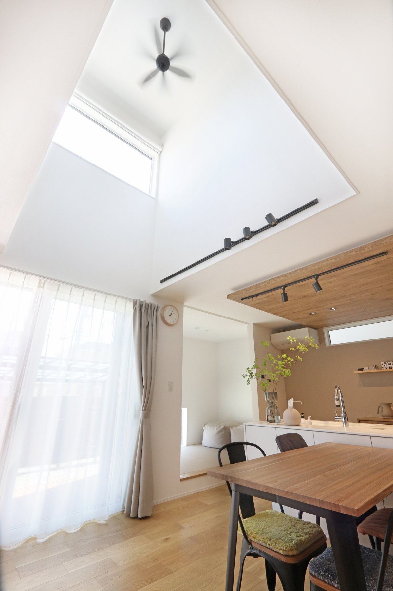
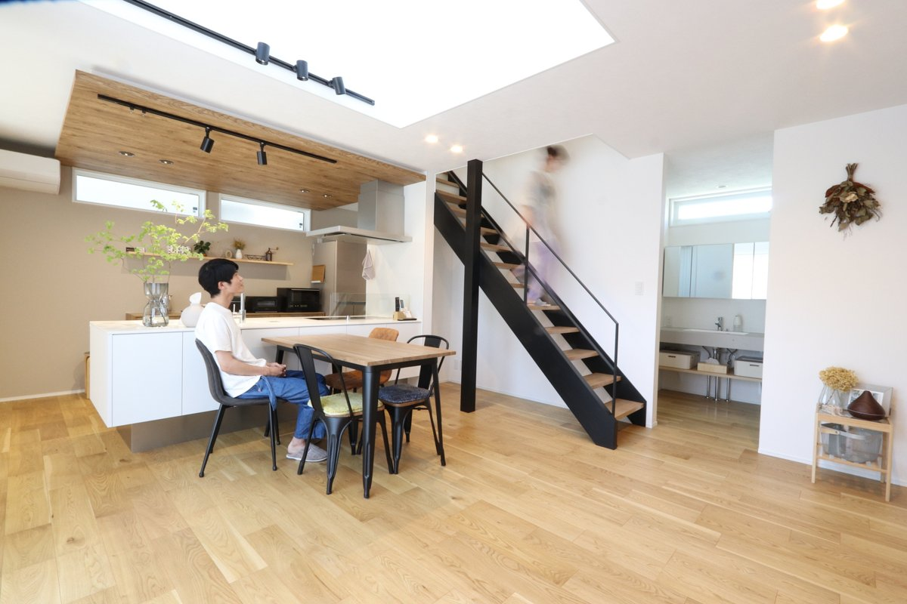

旧サイトに掲載していた取材記事より。
結婚してから2年ほど賃貸マンションに住んでいましたが、収納も足りないし空間的にも手狭に感じていました。
もともと二人とも庭付きの家に住みたいと話していたので、これを機に、家づくりをスタートすることに。
会社の知り合いに建売住宅を購入した人がいたのですが、聞くと建売住宅ならではの後悔をたくさんされていたのでせっかくの我が家なら、自分達の要望を組み入れた注文住宅にしたいと思いました。
注文住宅といっても、ハウスメーカーは広告費や、たくさんの経費がかかっていて、有名な分安心できるという方もいると思いますが私たちは、信頼できる工務店で建てるのがコストパフォーマンス的にも一番良いと考え、まずは工務店を探し始めることにしました。
家づくりを始めることになってインスタグラムで奈良の工務店を探して、初めて行った住宅会社がシバサンホームでした。
私たちが、ガツガツ営業されるのが苦手だったのですが、売り込みもなく楽しく為になる見学ができたのがすごく良かったです。
そこから色んな他の会社を見て回ってシバサンホームと、どっちが良いか比べましたが最後には夫婦ともシバサンホームが良いと、納得して家づくりをお願いしようと決めました。

玄関から間取りを考えていきました。
ホール、リビングにも行ける動線と一直線に収納動線としてシューズクロークへ行けて、そのまま水回りにも行ける快適でスムーズな導線にこだわりました。
そして暗くなりがちな玄関は、足元に地窓を配置することで、プライバシー性を確保しながらもしっかりと明かりを取り込めるように工夫。
また、「抜け感」をプラスしてくれることで、空間を広く見せてくれます。
他には広く感じる明るい空間づくりとしてLDKに吹き抜けも採用してよかったです。
吹き抜けと二階ホール部分を繋げることで、ゆとりを持たせて開放的な空間になりました。
日中は吹き抜け上部の壁に窓を設置したことで、トップライトから光が差し込み、電気もつけなくていいくらいですし開放感があって、とても心地よく、気に入っています。
色合いも、コーディネーターさんと相談しながら進めることで、大満足のものができました。
最後の最後に扉の色を白色から、マットダークに変更してもらったのですが差し色になって、とても良かったです。
同じ時期に家を建てた友人が遊びに来て驚いてくれたのが嬉しかったです。
実際に見て優先順位を決めることが大切だと思います。
インスタグラムやインターネットで、情報収集していましたが、画像で見ていると、「あれも良い、これも良い」となってしまって予算がバクハツ（大幅にオーバー）してしまうので、自分の好みと合うかどうか、優先順位を考えやすくなると思います。
優先順位を決めながら進めることが大切だと思います。